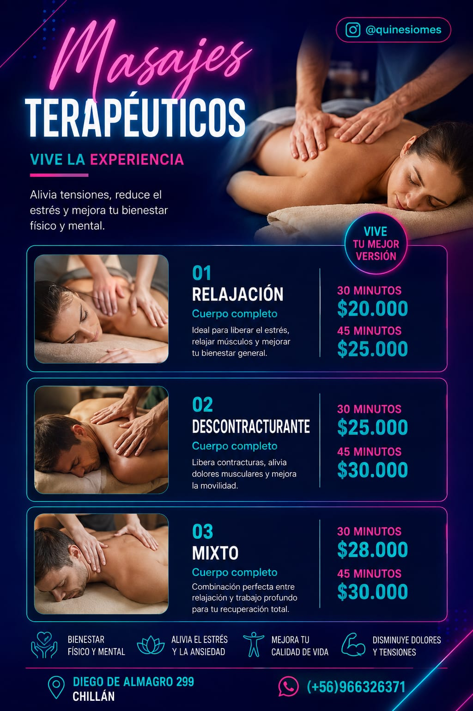
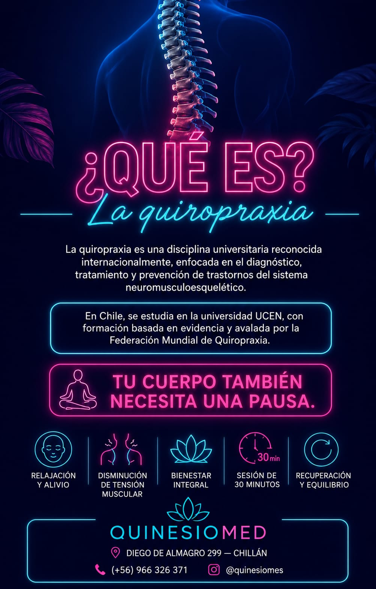
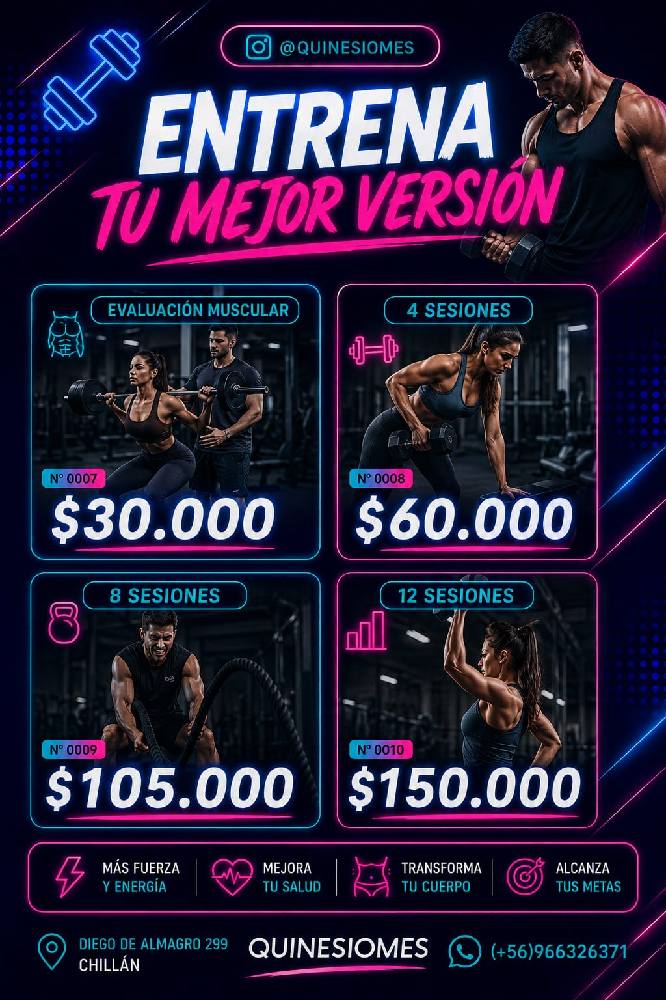

Masoterapia
Atención mediante técnicas de masaje orientadas al bienestar, la relajación y el cuidado corporal.
Solicitar cita por WhatsApp
Conoce brevemente nuestras áreas de atención. Si quieres reservar, escríbenos por WhatsApp y te ayudaremos a coordinar una hora.
Atención mediante técnicas de masaje orientadas al bienestar, la relajación y el cuidado corporal.
Solicitar cita por WhatsApp
Atención enfocada en el movimiento, la función física y el acompañamiento de objetivos de rehabilitación.
Solicitar cita por WhatsAppConsulta profesional enfocada en la evaluación y el cuidado del sistema musculoesquelético.
Solicitar cita por WhatsApp
Atención orientada a la mejora de la condición física, la fuerza y la resistencia mediante ejercicios guiados.
Solicitar cita por WhatsApp
Las tarjetas avanzan cada 3 segundos. También puedes desplazarlas manualmente.
Al pulsar el botón se abrirá WhatsApp con un mensaje preparado. Revísalo y envíalo para solicitar tu cita.